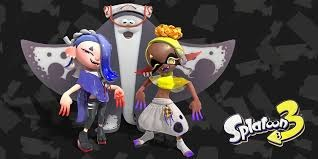
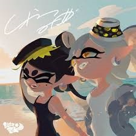
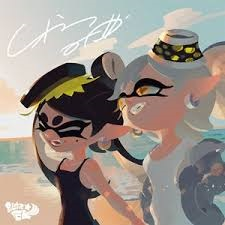

Idols,Historia y Albumes
Idols,Historia y Albumes
En Splatoon, las "idols" son personajes populares y prominentes dentro del universo del juego. Representan figuras ídolos o celebridades que son adoradas por los personajes del juego y por los jugadores. Las idols más destacadas en Splatoon son:
Squid Sisters: También conocidas como las Calamarciñas, Callie y Marie son dos Inklings hermanas que se desempeñan como presentadoras de noticias y cantantes en el mundo de Splatoon. Son muy queridas por la comunidad de jugadores y desempeñan un papel importante en la trama del juego.
Off the Hook: Conocidas como las Cefalopop, Pearl y Marina son las sucesoras de Callie y Marie como presentadoras de noticias y cantantes. Pearl es una Inkling con forma de almeja y Marina es una Octoling. Juntas, forman un dúo dinámico que ha ganado popularidad entre los fans de Splatoon.
Deep Cut: conocidos como el Clan Surimi, shiver,frye y rayan son presentadores de noticias de otro lado mas lejos de inkopolis plaza y square,son amigos y son pertenecientes de splatland con el rol de ser ademas unos presentadores de noticias, unos caza recompesas
Estas idols no solo proporcionan entretenimiento dentro del juego, sino que también influyen en eventos y desafíos especiales que ocurren dentro del mundo de Splatoon. Su música y su estilo distintivos las han convertido en personajes queridos por los jugadores y han contribuido en gran medida a la atmósfera única y vibrante del juego.
calamarciñas
las "calamarciñas" son unas idolas famosas del popular juego llamado "splatoon",estas son mayormente conocidas por su televisora noticiera que anuncian nuevos escenarios,armas,eventos y festividades
las calamarciñas se conforman de 2 idolas llamadas "Callie" y "Marie",estas son primas y se juntas para formar incriebles canciones y tener eventos de las festividades ya lo sean "splatoween" y "frostyfest".Estas no solo son idolas, si no que son conocidas por formar parte de un equipo de agentes llamado "squidbeak" estas tienen de posicion agentes,mayor mente conocidas como aente 1 y 2
Callie: Es una Inkling con un estilo alegre y enérgico. Su atuendo suele ser de color rosa y tiene una marca de corazón en la parte lateral de la cabeza. Callie es conocida por su personalidad extrovertida y por ser optimista.
Marie: Es la hermana de Callie y también es una Inkling. A diferencia de su hermana, Marie tiene una personalidad más reservada y sarcástica. Suele vestir de color verde y tiene una marca de trebol en la parte lateral de la cabeza.
Juntas, Callie y Marie forman las Squid Sisters y desempeñan varios roles en el juego Splatoon. Son presentadoras de noticias y comentaristas durante los eventos del juego, además de ser cantantes y artistas populares en el mundo de Splatoon.
las cefalopop

Off the Hook es otro dúo de personajes prominente en el mundo de Splatoon, siendo sucesores de las Squid Sisters. Está formado por:
Pearl: Es una Inkling con forma de almeja. Es conocida por su actitud enérgica y su personalidad extrovertida. Tiene un estilo de rap y a menudo se muestra confiada y segura de sí misma. Pearl tiene un diseño único y llamativo, con un cabello rubio en punta y una corona en la cabeza.
Marina: Es una Octoling, lo que la hace única en comparación con la mayoría de los personajes principales del juego, que son Inklings. Marina es conocida por su calma y su inteligencia. A menudo tiene un papel más reflexivo y tranquilo en comparación con Pearl. Marina es una ingeniera talentosa y también es conocida por su habilidad para mezclar música.
Juntas, Pearl y Marina forman Off the Hook y cumplen roles similares a los de las Squid Sisters en el juego. Son presentadoras de noticias, comentaristas de eventos y también actúan como cantantes y artistas en el mundo de Splatoon. Off the Hook es muy popular entre los habitantes del mundo de Splatoon y tiene una gran base de fanáticos dentro del juego. Su música y sus actuaciones son una parte importante de la cultura pop del mundo de Splatoon, y han ganado popularidad tanto dentro como fuera del juego.
el clan surimi
Ellos son los anfitriones de Tintelia en la Onda (o Radio caótica), el noticiero de Tintelia, y también organizan Festivales, con Megan, Angie, y Rayan representado sus equipos respectivos en cada festival, asumiendo los roles de las Calamarciñas y Cefalopop de los juegos anteriores de la serie Splatoon. Durante sus transmisiones, Megan y Angie se sientan en cojines en el suelo por el lado izquierdo y frente a la audiencia, mientras Rayan sostiene una televisión larga por el lado derecho en la que aparecen los anuncios de las noticias, también frente a la audiencia.
La sección de Anarchy Splatcast de Splatoon 3 será presentada por el grupo conocido como Deep Cut, el cual está conformado por Big Man, Shiver, y Frye. Aquí, los jugadores recibirán constantes noticias sobre los eventos y anuncios que se lleven a cabo para este juego
Deep Cut desempeña roles similares en Splatoon 3 a los de Squid Sisters y Off the Hook en juegos anteriores. Proporcionan actualizaciones sobre los escenarios y modos disponibles actualmente y otras noticias y anuncios a través de su programa de radio y televisión Anarchy Splatcast. También organizan y actúan en Splatfests, con Shiver, Frye y Big Man representando cada uno de los tres equipos en cada Splatfest.
 
